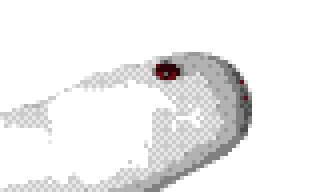
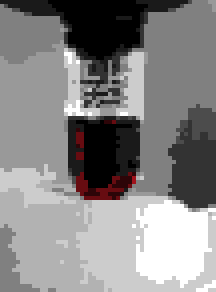
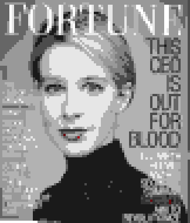
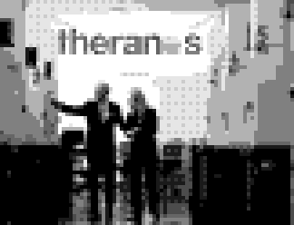
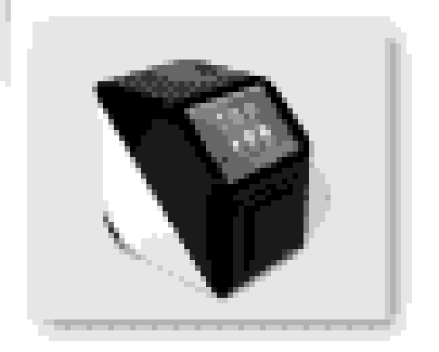
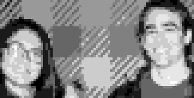
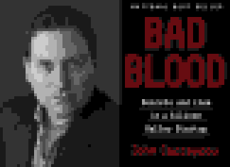
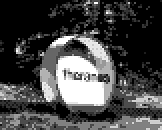

Innovation & business · A case study
Theranos — The rise, the fall and the failures behind it

Theranos promised easier blood testing, attracted major funding and partnerships, then collapsed. This analysis explains how the company gained credibility before its technology had adequate validation.
How to read the evidence
SEC civil allegation criminal verdict court finding company claim peer-reviewed study reported figure participant recollection
Contested figures carry the type of record they come from. Unlabelled events are matters of public record: announcements, regulator notices and court dockets.
01The pitch
The promise was easy to understand

In 2003 Elizabeth Holmes founded Theranos to make blood testing easier. Early work centred on a proprietary analyzer and pharmaceutical trials.
Blood draws could be uncomfortable, and a laboratory visit took time and could create price uncertainty. Theranos offered small samples, convenient collection and quicker results at lower advertised prices.
02Capital
Funding grew from early backing to very large rounds

Funding grew in stages. In 2009 Sunny Balwani guaranteed a credit line and joined as president and chief operating officer.
| Period | Funding raised | Reported valuation |
|---|---|---|
| 2004 | more than $6mReuters timeline (reported figure) | $30m |
| 2010 | a further $45mReuters timeline (reported figure) | $1bn |
| Late 2013–2015 | over $700min two rounds (SEC civil allegation) | around $9bnreported for 2014 |
Three different measures
- Funding raised
- Cash that investors put in.
- Valuation
- The price a funding round implies for the whole company.
- Operating revenue
- Money earned from customers.
These reports are not a complete funding ledger, and historical reports can overlap.
03Investors
How Theranos persuaded investors
Meetings with Holmes
Personal access built belief in the founder.
Live demonstrations
The SEC alleged that some demonstration samples actually ran on third-party machines. (SEC civil allegation)
Investor binders
Projections, media profiles and reports carrying pharmaceutical logos that falsely implied independent endorsement. (SEC civil allegation)
The signals appeared to confirm one another, and none of them was an independent check.
The criminal trial established knowing false representations to investors. (criminal verdict)
04The board
Prestige helped the company gain credibility

Prominent directors and heavy press attention made the company easy to believe. These signals could encourage confidence without establishing whether the technology worked.
Directors included
- George ShultzFormer US Secretary of State
- Henry KissingerFormer Secretary of State and National Security Advisor
- James MattisRetired Marine general, later Secretary of Defense
Their expertise was in diplomacy and security. In July 2015 the sitting Vice President visited the production facility.
Reputation is not technical verification.
05The channel
Walgreens connected the company to patients
Leaders targeted retail testing in 2010, while the miniLab was still in development. (SEC civil allegation) The Walgreens service launched in 2013 and retail patient testing began. Walgreens supplied a familiar place to collect samples without Theranos building a retail network of its own.
- A clinician requests tests
- The sample is collected in store
- A laboratory processes it
- The result returns to the clinician
Testing payments had to cover collection, transport, processing and quality control, and research still needed cash.
06The gap
The technology and the finances did not match the story
Independent testing, 2016

Diluting a tiny sample was the physical constraint: dilution lowers the concentration each test has to detect.
Bars to scale; the second is drawn at a one-pixel minimum.
Using conventional equipment was not inherently wrong. Misrepresenting current capability and financial performance was the deeper problem.
07Governance
What went wrong inside the company
Expansion before adequate validation
A broad retail promise exceeded the demonstrated analyzer scope.
Misleading current claims
Technology, financial projections and apparent endorsements. Investors could not judge the actual state of the business.
Weak challenge to leadership
Concentrated voting control (SEC civil allegation) and resistance to employee concerns. Contrary evidence struggled to change major decisions.
An unsuccessful experiment can be reported honestly. The fraud conviction concerned knowing misrepresentation. (criminal verdict)
08Whistleblowers
Employees carried the warning outside

Technical staff could observe quality problems. Outsiders had limited access to those facts.
- Erika CheungContacted health regulators.
- Tyler ShultzBecame a source for journalist John Carreyrou. He later described unsuccessful internal challenges and legal pressure after raising concerns. (participant recollection)
Reporting channels need protection, independent review and authority to act.
092015–2016
Scrutiny progressively broke the public narrative

Scrutiny overlapped. Scientific questions, investigative reporting and laboratory inspection each arrived from a different direction, and each made the company’s claims easier to challenge.
- Feb 2015
John Ioannidis questions the evidence gap in JAMA, before the major newspaper investigation.
- Jul 2015
The FDA clears one named HSV-1 assay.
- 15 Oct 2015
John Carreyrou’s Wall Street Journal investigation compares company claims with insider information.
- Late 2015
CMS inspects the Newark laboratory and finds serious deficiencies.
- Mar 2016
CMS sanctions follow.
Evidence accumulated over time; one article alone does not explain the collapse.
102016–2022
Regulators and partners ended the business

Regulators and partners closed the business within three months of each other in 2016.
- May 2016
Theranos voids two years of Edison results and issues tens of thousands of corrected reports.
- 12 Jun 2016
Walgreens ends the partnership and closes all 40 Arizona wellness centres, acting on the proposed sanctions.
- 7 Jul 2016
CMS revokes the Newark laboratory’s CLIA certificate and bars its owners and operators from running a lab for at least two years.
- Sep 2018
Sale attempts fail and Theranos dissolves.
- 2022
Holmes is convicted of fraud. Balwani’s verdict named patients. (criminal verdict)
Without a licence or a channel, the business could not operate.
Holmes and Balwani had separate trials and different verdicts.
112023–2026
After the convictions
- 30 May 2023
Holmes enters prison on a sentence of 11 years and 3 months. (court finding)
- 2023–25
About $452m in restitution is ordered jointly and severally. Both convictions are upheld on appeal in 2025. (court finding)
- 16 Jan 2026
A 90-year exclusion from federal healthcare programs is upheld. (court finding)
- 26 Mar 2026
The prison sentence is reduced to 10 years and 3 months; the conviction is unchanged. (court finding)
12Lessons
What the case teaches
Credibility is not proof
A famous board, press coverage and a retail partner raised money. None of them tested the device.
Validation sets the date
Retail launch was promised before the analyzer could deliver the advertised menu.
Disclosure is a choice
A failed experiment is survivable. Misstating current capability is fraud.
Credibility scaled faster than evidence.
For an innovator, the controllable variable is not certainty, but disclosure.